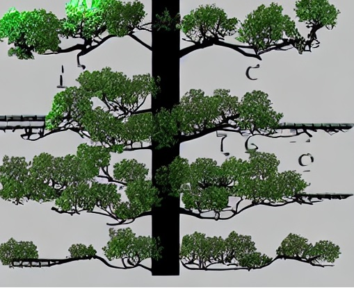

Ever wondered if mushrooms are your next culinary adventure or a potential game of risky business?
In this project, I've dived headfirst into this fungal mystery! Using custom-made decision trees and random forest classifiers
we can decide if those mushrooms on your plate are friend or foe.

A min heap is a specialized binary tree data structure where each parent node holds a value smaller than its child nodes.
It's like a hierarchy of values where the smallest sits right at the top. As you navigate down the heap, each level boasts progressively larger values.
This orderly arrangement isn't just for show; it allows for lightning-fast access to the smallest element in the heap - a nifty feature for algorithms that thrive on efficiency.

A splay tree is not your ordinary data structure; it's a dynamic, self-adjusting marvel that redefines the traditional notions of balance. Picture this: every time you access or modify a node, the splay tree performs a series of splay operations, magically bringing the manipulated node to the root. It's like the tree is alive, ensuring that frequently accessed elements get VIP treatment by rising to the top.

Machine learning is a field of artificial intelligence (AI) that enables systems to learn and improve from experience without being explicitly programmed. Binary classification, a fundamental task in machine learning, involves categorizing data into predefined classes or labels based on their features or attributes. Compare several ML algorithms to classify apples as good or bad, with over 90% accuracy.
Math with the Quemu Arm emulator using Legv8. It's a math maestro! Feed it two integers, x and y, and watch the magic. Recursively finding x raised to the power of y. Caveat: if y hits 0 or less, we're calling it a cool zero.

Ever wonder how a computer's cache works? This file is your ticket to a cache adventure, simulating the ins and outs. Feed it the details, let it juggle data in and out of that cache. It's all about hits, misses, and the magic in between.